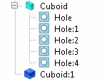

Block With Holes
SmartParts are not added from the Objects Palette like other SmartParts,
they are created from existing Cuboids in the model.
Restrictions and Limitations
Holes that are 0.01% or
less than the smallest side of the block face are ignored by the
grid, the solver, and the decompose command, and are only displayed
in wireframe rendering mode.
Procedure
- Select a cuboid and then add
one or more holes.
- Define the properties using
the Block With Holes property sheet and the Hole SmartPart property
sheet(s).
Results
A Block With Holes has a different
icon from a cuboid, see Figure 1.
Figure 1. A
Block With Holes in the Data Tree